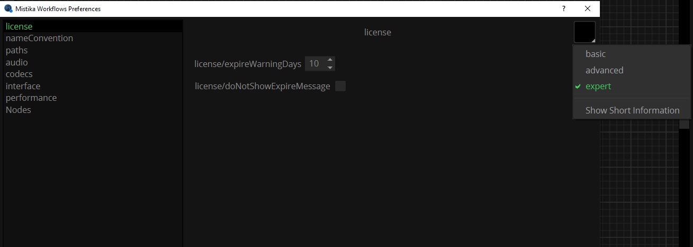
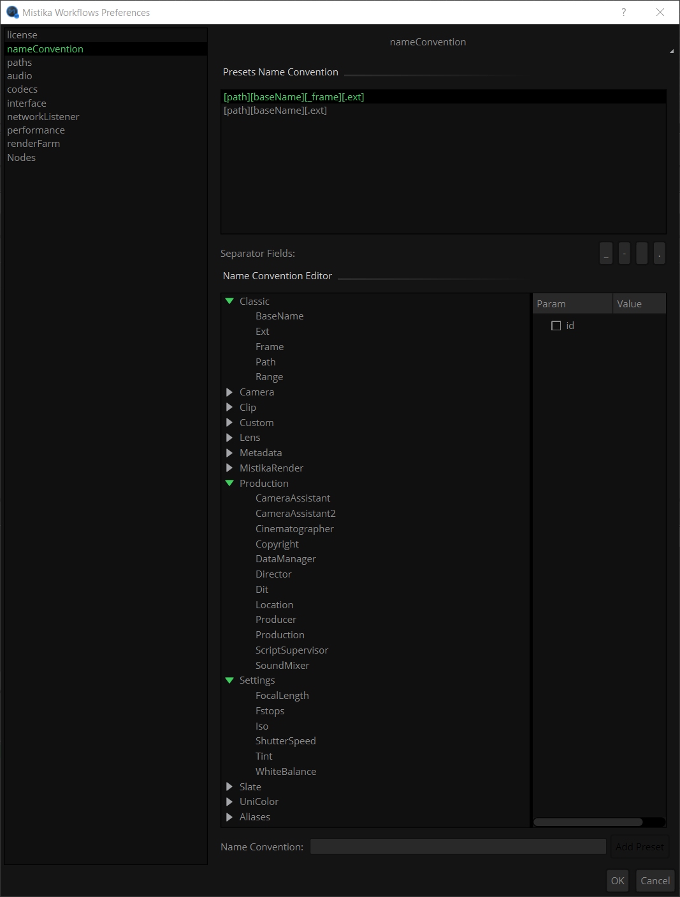
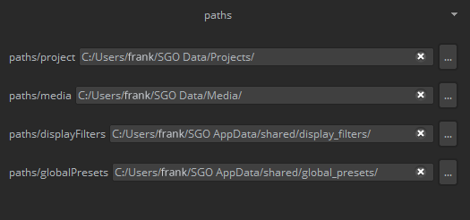
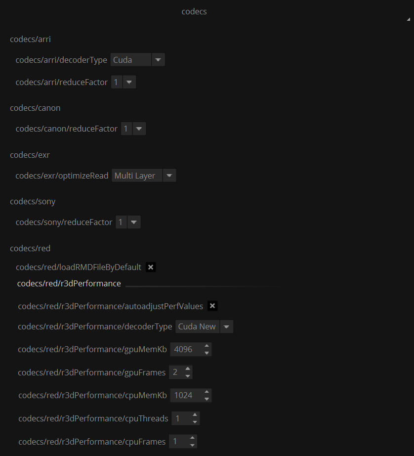
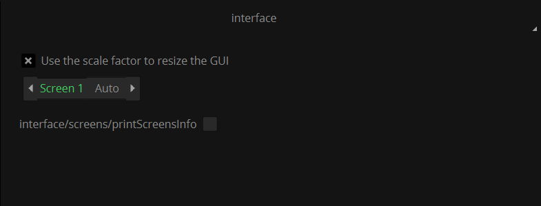
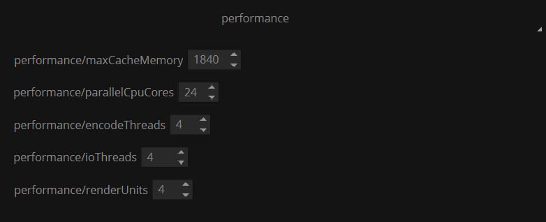
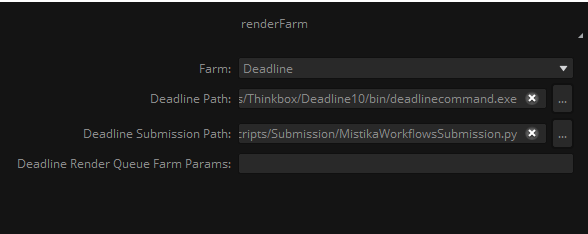

|
<< Click to Display Table of Contents >> Navigation: Main menu > Preferences |
In this window, only the basic settings are shown by default. The down arrow icon in the upper right corner permits to show additional options.
Note: These settings are constantly changing, the next images are just examples and may not match what you see in the interface in newer versions.

These are the basic settings:
Note: Most settings are trivial or have auto explicative names and are not detailed here, explanations are only provided for the ones that may need it.
- License: you can set up at you will how many days you want you expiration warning message or not message in any case.
- Name Convention: Here the user can decide the default naming convention to be used in the workflow nodes by default. This system permits to set and enforce naming rules for media files to avoid naming mistakes. This tool is described in the Name convention manager chapter.

- Paths: Here you can select the Mistika projects folder, the default media folder, display filters and Global presets folder. For more details check the Mistika Workflows Folder structure .

- Audio: Here you can set optional properties for audio render.
- Codecs: Here you can control the render performance settings applicable to some specialized image formats. Currently: ARRI, Canon, Sony, RED and EXR. Metadata variables are also included, which can be used to overwrite those provided in the media files by default.

The reduceFactor settings permit to extract the images at a lower resolution for faster performance (at the cost of quality)
In the case of RED Files, the fastest decoder is Cuda (by far), but it requires a modern NVIDIA board with 3GB or more graphics memory.
The rest of the settings in this panel should only be changed when instructed by the support team.
- Interface: Here you have some scaling options to adapt the interface to your monitors. typically used to make fonts and other elements bigger on 4K GUI monitors.

In Auto mode Mistika will try to guess the best font sizes for your display. But if the text size does not feel right then it is recommended to do this:
First deactivate "use the scale factor to resize the GUI, and restart workflows.
It fonts are too small, calculate what is the scale size that you will need, reactivate the above property and set the scale value that you want to try.
Restart workflows to see the changes.
ConnectionQuality / connectionCurvature: Control how the nodes graph is drawn. Reduce values (up to 1, which will just draw straight lines) for fast performance on very complicated graphs.
- Performance: Here you can set performance related values. mainly affecting task nodes with transcoder capabilities and also the MistikaRender node.

These values permit to fine tune the system for a specific hardware and for specific workflows.
Once we go into software optimizations, first thing is to study the situation in the Task Manager or Activity Monitor during workflow executions render (using a representative timeline). We can distinguish two main cases.
1 - If you see that either the CPU or the GPU usage is around 75% or more for most of the time, then a hardware upgrade for that particular component would probably be required to get more speed..
The reasons why we say 75% and not an even higher values is this: If the CPUs have "hyperthreading" activated (recommended), then you will rarely get 100% usage of all CPU threads (Hyperthreading creates extra "virtual threads" that are not independent but need to share CPU resources), so in many cases you may be using all the CPU capabilities even if you only see 75% - 80% total usage.
2 - But if you don't see very high activity in none of those (GPU and neither CPUs), then it can be that Mistika is not using the CPUs as efficiently as possible, so that they are not decoding and feeding enough frames per second to the GPU as they could do (which will make the GPU also idle most of the time). This is not always true because other components maybe involved (not enough RAM, slow disk access, usage of GPU "shared" memory....), but if you don't see any evident cause it may be worth to try manually adjusting these settings. Now going into the matter:
ioThreads: This is the number of CPU threads dedicated to decode camera source frames in parallel. Sometimes Mistika can bee too conservative in order to prevent destabilizing the system (big values may use a lot of RAM and be inefficient, specially because many 3rd party codec libraries will also split their own threads without Mistika being able to control this aspect, and because it needs to reserve some threads for rendering and the OS). So it may be worth it to try to find optimal values by trying manually and comparing.
In theory the most aggressive value that you could try would be to put the number of total CPU threads of your CPUs (you can get this value from the Task Manager/Activity Monitor), but in general we don't recommend to go over over 2/3 the total number of CPU threads, and no more than 24 as an upper limit. If this value is too high it will reduce the performance, waste RAM, and ultimately destabilize the system. Please note that rendering and codec libraries will need to split some threads on their own as said, and also the operating system...
encodeThreads: This is basically the same concept but in this case for encoding the render format. By default it should use up to half the threads of the system or so, thus letting the other half available for decoding the cameras. But if the render format is very complex (exr compressed, j2k, XAVC...) then you could force a high value as in the previous case, (but remember to let enough threads available for the camera decoding).
On systems with Hyperthreading activated, neither ioThreads and encodeThreads should be higher than two thirds of the total number of CPU threads. For example if your system has 16 core / 32 threads (Hyperthreading) then the maximum recommended value would be 32 * (2/3) = 21. Higher values will decrease Mistika speed due to inefficient usage of the system resources.
renderUnits: This is the number of frames that are read from disk on each IO operation, and it also defines the size of the output queue for writing files to disk. In general we do not expect any perfomance gain by increasing the default value, but it may help a lot to decrease it (up to 1) when working with high resolution files (8K and bigger). In those cases the system will not only be faster but also more stable when reducing it.
The other settings are not recommended to be changed (or only if instructed by the support team)
- RenderFarm: Here you defined the render farm that your workflow is going to use, with the path where the parameters of that application are located, such as Deadline.

An introductory video using Deadline is available here.
- Nodes: Default property values for each node. You can change things like their default name, color, default property values, or in the case of nodes with output paths the path specs like directory, base name, extension, etc.
Transcoding task nodes can also define the default codec to use, a display filter to load, etc. This is a good place to set the most common settings for your typical workflows and save time later (these are just the defaults, you can change those values on any instanced nodes later)
Default values are stored in a dedicated .xml for each node, in the folder: SGO AppData/shared/users. If you create your own Python nodes you can use any other node as a reference to create a default settings files for your new node.